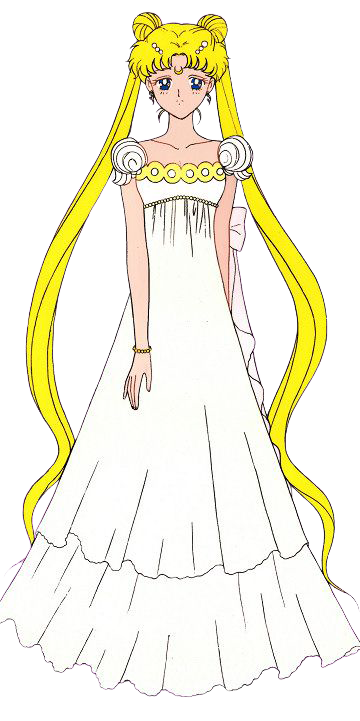

High Fashion In Sailor Moon
Naoko Takeuchi, the author of Sailor Moon, was a big fan of fashion and luxury brands including Chanel, Mugler, Dior, Versace, and more. This heavily influenced her manga and many character designs. For excample princess Serenity’s dress was inspired by a 1992 Dior design.
